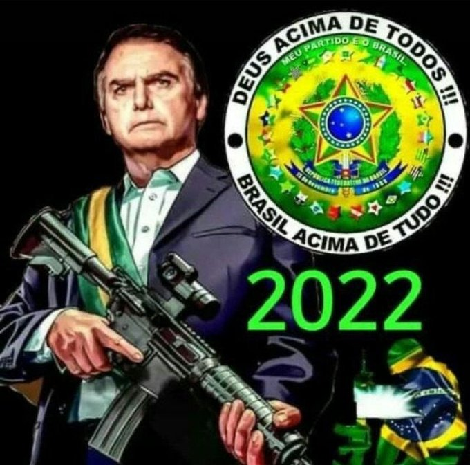

O que é o projeto bolsolula final wars?
o projeto bolsolula final wars é um projeto de um filme que nasceu de uma conversa estranha no zap. o projeto inicialmente foi desenvolvido pelo Bruno , pelo mbgkgames e pelo caua_cigs, mas por falta de comprometimento e por o caua ser um pobre , o projeto esta sendo tocado somente pelo Bruno e pelo mbgkgames, mas futuramente teremos uma presença feminina entando no projeto.
sinopse
o filme conta a historia de murilo, um pai de familia que a noite, vira duende brasil e combate o crime. A muitos anos, duende brasil derrotou o imperio de lula, e fez o mito(bolsonaro) governar o brasil por muitos anos, mais agora, lula voltou mais forte do que nunca e ele precisara da ajudar de bruno e do mito para derrotar lula. Veja o trailer oficial
data de lançamento
o projeto não tem data de lançamento marcada, por que os desenvolvedores são preguiçosos pra caralho, mais n se preocupem fãs! o projeto ta sendo feito na medida do possivel!